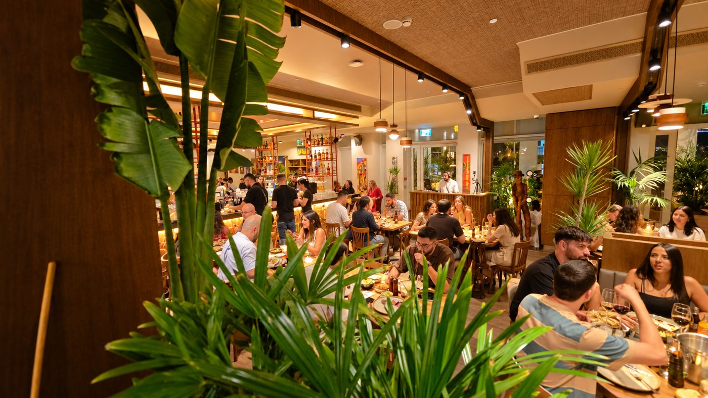

חופשה, בטן גב ומסעדה טובה - אילת בדיוק בזמן

אילת, בירת התיירות של ישראל, היא ללא ספק היעד האולטימטיבי לכל סוגי החופשות, בין אם מדובר בחופשה זוגית רומנטית, בין אם מדובר בחופשה משפחתית עם הילדים ובין אם מדובר בחופשה מטעם מקום העבודה המאורגנת על ידי ועד העובדים. כך או אחרת, לעיר התיירות של ישראל יש הרבה מה להציע לכם במהלך החופשה, וזאת מעבר לשירותי האירוח המנפקים הממתינים לכם בכל אחד מהמלונות הטובים והאיכותיים של העיר, כאשר אחת מהאטרקציות התיירותיות של העיר הדרומית היא השפע הקולינארי הממתין לכם במסעדות המובילות של העיר.
חופשה באילת - ליהנות מכל העולמות
חופשה באילת לאורך כל ימות השנה מאפשרת לכם ליהנות מכל העולמות, החל מהאפשרויות לחופשת בטן גב בבריכות השחייה במלונות ובחופי הרחצה, דרך אטרקציות לכל בני המשפחה ועד לשפע קולינארי הממתין לכם במסעדות מובחרות ברחבי העיר. ביקור בכל מסעדה אילת מתאפשר במהלך ימי החופשה שלכם בעיר, כאשר בין אטרקציה כזו או אחרת לבין רביצה בחופי הרחצה, תוכלו להתענג על תפריטי אוכל מענגים באחת ממסעדות העיר.
ברזיל, תאילנד, צרפת ואיטליה - כל מטבחי העולם בבירת התיירות של ישראל
השפע הקולינארי הממתין לכם בעיר הדרומית, משלב בתוכו מסעדות דרום אמריקאיות המבוססות על מנות בשרים עסיסיות, מסעדות תאילנדיות עם הטעמים המתוקים - חמוצים של המטבח התאילנדי, מסעדות איטלקיות עם תפריטים חלביים ובשריים ומסעדות צרפתיות עם מנות גורמה. בכל מסעדה אילת מובילה בתחומה תוכלו ליהנות גם מתפריטי אירוח מענגים בהתאם לסוג המסעדה בה בחרתם וגם מאווירת אירוח שהיא המשך ישיר לחופשה של בעיר. ההיצע הקולינארי הגדול יחסית של העיר, מאפשר לכם לבחור בכל אחד מימי החופשה את המסעדה בה תבקרו ותסעדו וזאת בהתאם לסוג המטבח העולמי המועדף עליכם באותו היום.
תפריטי אוכל המותאמים לכל הרכב סועדים
כעיר תיירותית, בכל מסעדה אילת מושם דגש על תפריטי האוכל המיועדים לכלל הנופשים בעיר הדרומית, והדבר מאפשר לכם מתפריטי אוכל מגוונים המותאמים לכל הרכב סועדים, בין אם מדובר בבני זוג המגיעים למסעדה למטרות ארוחה רומנטית ובין אם מדובר במשפחות המגיעות למסעדה עם מספר כזה או אחר של ילדים בגילאים שונים. במסעדת בשרים לצורך העניין, תוכלו למצוא תפריט המיועד לחובבי הבשר העסיסי שביניכם עם מנות גדושות של בשר על האש וזאת לצד תפריט ילדים.
בחירת מסעדות באילת - מה חשוב לדעת?
השפע הקולינרי הממתין לכם באילת כולל בתוכו עשרות דוכני אוכל רחוב לצד מסעדות מוכרות ומומלצות, ולכן, כאשר בוחרים מסעדה באילת חשוב להתייחס גם לסוג המסעדה: מסעדה אילת של בשרים מובחרים, מסעדה אסיאתית וכדומה וגם למספר הסועדים. כמו כן, חשוב להתייחס למיקומה של המסעדה בעיר ושעות פעילותה. ברוב המקרים, מומלץ לשלב את הביקור במסעדה בהתאם לסדר היום אותו תכננתם וזאת על מנת להקדיש את הזמן הראוי לבילוי במסעדה בה בחרתם, ובמיוחד במקרים בהם מדובר בכל סוג של מסעדה אילת בה תוכלו ליהנות מתפריט אכול כפי יכולתך. חשוב לציין שבמהלך עונת התיירות החמה באילת, מומלץ להזמין מקום מראש במסעדה המומלצת בה בחרתם ולצורך כל אנו ממליצים לכם להיחשף למסעדות המומלצות בעיר עוד בטרם הגעתכם לעיר התיירות. בחלק מאתרי האינטרנט של המסעדות המובילות תוכלו למצוא מגוון רחב של מבצעים והטבות המיועדים לכל אילו מביניכם המתכוונים לבקר במסעדה במהלך החופשה הבאה שלכם באילת.
אטרקציות תיירותיות לאורך כל ימות השנה
מזג האוויר האידיאלי הממתין לכם באילת לאורך כל ימות השנה, מאפשר לכם ליהנות ממגוון רחב של אטרקציות תיירותיות מסביב לשעון ולאורך כל שעות היום והלילה. בשעות הבוקר תוכלו לבלות בבריכה בבית המלון בו אתם נופשים ובאחד מחופי הרחצה של העיר, בשעות הצהריים תוכלו לקיים מגוון רחב של פעילויות ספורט ימיות הכוללות גם פעילויות אתגר לאמיצים שביניכם ולקראת שעות אחר הצהריים תוכלו לבקר באחת מהאטרקציות המפורסמות של העיר כגון: המצפה התת ימי, ריף הדולפינים, שמורת האלמוגים וכדומה. את שעות הערב והלילה תוכלו להקדיש בביקור מסעדה מומלצת אילת וליהנות גם משופינג בעשרות הדוכנים והחנויות לאורך הטיילת וכמובן גם בקניונים הממוזגים. אם גם אתם מתכננים חופשה בקרוב באילת זה הזמן להכיר את המסעדות המובילות בעיר ולהבטיח לכם מקום. להזמנת מקום באחת ממסעדות הבשרים המובילות בעיר לחצו כאן